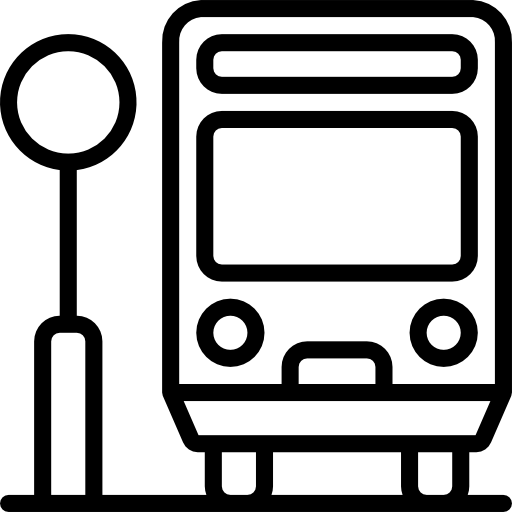

내 주변 버스 정보

버스 정보
버스 번호: 14
출발지: 백석대학교(운동장)
도착지: 백석초등학교
버스 정보
버스 번호: 700
출발지: 안서동(문암)
도착지: 전의읍내리(종점)
버스 정보
버스 번호: 701
출발지: 안서동(문암)
도착지: 전의읍내리(종점)
다음 버스
버스 번호
도착 예정 시간
도착지
14
잠시후 도착
단국대학교병원
700
약 3분후 도착
전의읍내리(종점)
701
약 4분후 도착
전의읍내리(종점)
702
약 12분후 도착
행정리